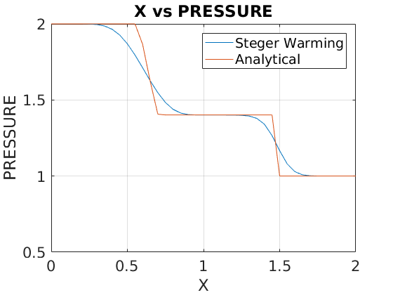
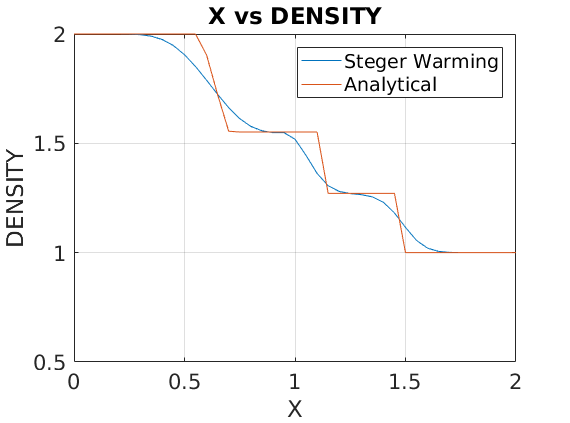
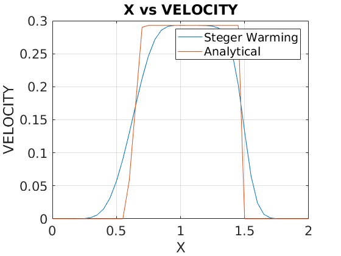

Contents
clear all
clc
clf
INITIALIZATION
gamma = 1.4;
p4 = 2.0;
p1 = 1.0;
rho4 = 2.0;
rho1 = 1.0;
imax = 41;
xmin = 0;
xmax = 2.;
dx = 2/(imax-1);
global rho_vector
global p_vector
global velocity_vector
global dtnew
x = 0:dx:2;
x0 = find(x==1.0);
u = zeros(1,imax);
USTATE = zeros(3,imax);
USTATE_UPDATE = zeros(3,imax);
lamda_plus_i_plus = zeros(3,3);
lamda_minus_i_plus = zeros(3,3);
Ca_i_plus = zeros(3,3);
Ca_inverse_plus = zeros(3,3);
S_i_plus = zeros(3,3);
S_inverse_plus = zeros(3,3);
FPLUS = zeros(3,imax);
xplus = zeros(3,3);
xplusinv = zeros(3,3);
xminus= zeros(3,3);
xminusinv= zeros(3,3);
lamda_plus_i_minus = zeros(3,3);
lamda_minus_i_minus = zeros(3,3);
Ca_i_minus = zeros(3,3);
Ca_inverse_minus = zeros(3,3);
S_i_minus = zeros(3,3);
S_inverse_minus = zeros(3,3);
FMINUS = zeros(3,imax);
Abarplus_plus= zeros(3,3);
Abarminus_plus= zeros(3,3);
Abarplus_minus= zeros(3,3);
Abarminus_minus= zeros(3,3);
USTATE(1,1:x0) = rho4;
USTATE(1,x0:imax) = rho1;
USTATE(3,1:x0) = p4/(gamma-1);
USTATE(3,x0:imax) = p1/(gamma-1);
USTATE_UPDATE = USTATE;
timestep = 0;
maxtimestep = 18;
MAIN LOOP
while timestep <maxtimestep
PART 1: CALCULATE DT
for i = 1:imax
u_at_i = USTATE_UPDATE(2,:)./USTATE_UPDATE(1,:);
rho_at_i = USTATE_UPDATE(1,:);
e_at_i = USTATE_UPDATE(3,:);
p_at_i = (e_at_i-0.5.*rho_at_i.*u_at_i.^2);
a_at_i = sqrt(gamma*p_at_i./rho_at_i);
abs_u_plus_a_at_i= abs(u_at_i+a_at_i);
dt_at_i = dx./abs_u_plus_a_at_i;
dt_smallest = min(dt_at_i);
real_dt = 0.9*dt_smallest;
end
dt = real_dt;
PART 2: DEAL WITH U PLUS HALF
for i = 2:imax-1
USTATE_PLUS(:,:) = 0.5*(USTATE(:,i)+USTATE(:,i+1));
rho_plus = USTATE_PLUS(1,:);
u_plus = USTATE_PLUS(2,:)./USTATE_PLUS(1,:);
p_plus = (USTATE_PLUS(3,:).*(gamma-1)) - (0.5).*(gamma-1).*rho_plus.*u_plus^2;
a_plus = sqrt(gamma.*p_plus./rho_plus);
lamda1plus = u_plus;
lamda2plus = u_plus+a_plus;
lamda3plus = u_plus-a_plus;
lamda1plus_plus = 0.5*(lamda1plus+abs(lamda1plus));
lamda2plus_plus = 0.5*(lamda2plus+abs(lamda2plus));
lamda3plus_plus = 0.5*(lamda3plus+abs(lamda3plus));
lamda1minus_plus = 0.5*(lamda1plus-abs(lamda1plus));
lamda2minus_plus = 0.5*(lamda2plus-abs(lamda2plus));
lamda3minus_plus = 0.5*(lamda3plus-abs(lamda3plus));
lamda_plus_i_plus(1,1) = lamda1plus_plus;
lamda_plus_i_plus(2,2) = lamda2plus_plus;
lamda_plus_i_plus(3,3) = lamda3plus_plus;
lamda_minus_i_plus(1,1) = lamda1minus_plus;
lamda_minus_i_plus(2,2) = lamda2minus_plus;
lamda_minus_i_plus(3,3) = lamda3minus_plus;
Ca_i_plus(1,1) = 1.0;
Ca_i_plus(1,2) = 0.0;
Ca_i_plus(1,3) = -1./(a_plus.^2);
Ca_i_plus(2,1) = 0.0;
Ca_i_plus(2,2) = rho_plus.*a_plus;
Ca_i_plus(2,3) = 1.0;
Ca_i_plus(3,1) = 0.0;
Ca_i_plus(3,2) = -rho_plus.*a_plus;
Ca_i_plus(3,3) = 1.0;
beta = gamma-1;
alpha_plus = (u_plus.^2)./2;
S_i_plus(1,1) = 1.0;
S_i_plus(1,2) = 0.0;
S_i_plus(1,3) = 0.0;
S_i_plus(2,1) = -u_plus./rho_plus;
S_i_plus(2,2) = 1.0./rho_plus;
S_i_plus(2,3) = 0.0;
S_i_plus(3,1) = alpha_plus.*beta;
S_i_plus(3,2) = -u_plus.*beta;
S_i_plus(3,3) = beta;
Ca_inverse_plus(1,1) = 1.0;
Ca_inverse_plus(1,2) = 1.0./(2.*a_plus.^2);
Ca_inverse_plus(1,3) = 1.0./(2.*a_plus.^2);
Ca_inverse_plus(2,1) = 0.0;
Ca_inverse_plus(2,2) = 1.0./(2.*rho_plus.*a_plus);
Ca_inverse_plus(2,3) = -1.0./(2.*rho_plus.*a_plus);
Ca_inverse_plus(3,1) = 0.0;
Ca_inverse_plus(3,2) = 0.5;
Ca_inverse_plus(3,3) = 0.5;
S_inverse_plus(1,1) = 1.0;
S_inverse_plus(1,2) = 0.0;
S_inverse_plus(1,3) = 0.0;
S_inverse_plus(2,1) = u_plus;
S_inverse_plus(2,2) = rho_plus;
S_inverse_plus(2,3) = 0.0;
S_inverse_plus(3,1) = alpha_plus;
S_inverse_plus(3,2) = rho_plus.*u_plus;
S_inverse_plus(3,3) = 1.0./beta;
Abarplus_plus(:,:) = S_inverse_plus(:,:)*Ca_inverse_plus(:,:)*lamda_plus_i_plus(:,:)*Ca_i_plus(:,:)*S_i_plus(:,:);
Abarminus_plus(:,:) = S_inverse_plus(:,:)*Ca_inverse_plus(:,:)*lamda_minus_i_plus(:,:)*Ca_i_plus(:,:)*S_i_plus(:,:);
FPLUS(:,i) = Abarplus_plus(:,:)*USTATE(:,i)+Abarminus_plus(:,:)*USTATE(:,i+1);
PART 3: DEAL WITH U MINUS HALF
USTATE_MINUS(:,:) = 0.5*(USTATE(:,i)+USTATE(:,i-1));
rho_minus = USTATE_MINUS(1,:);
u_minus = USTATE_MINUS(2,:)./USTATE_MINUS(1,:);
p_minus = (USTATE_MINUS(3,:).*(gamma-1)) - (0.5)*(gamma-1)*rho_minus.*u_minus.^2;
a_minus = sqrt(gamma*p_minus/rho_minus);
lamda1minus = u_minus;
lamda2minus = u_minus+a_minus;
lamda3minus = u_minus-a_minus;
lamda1plus_minus = 0.5*(lamda1minus+abs(lamda1minus));
lamda2plus_minus = 0.5*(lamda2minus+abs(lamda2minus));
lamda3plus_minus = 0.5*(lamda3minus+abs(lamda3minus));
lamda1minus_minus = 0.5*(lamda1minus-abs(lamda1minus));
lamda2minus_minus = 0.5*(lamda2minus-abs(lamda2minus));
lamda3minus_minus = 0.5*(lamda3minus-abs(lamda3minus));
lamda_plus_i_minus(1,1) = lamda1plus_minus;
lamda_plus_i_minus(2,2) = lamda2plus_minus;
lamda_plus_i_minus(3,3) = lamda3plus_minus;
lamda_minus_i_minus(1,1) = lamda1minus_minus;
lamda_minus_i_minus(2,2) = lamda2minus_minus;
lamda_minus_i_minus(3,3) = lamda3minus_minus;
Ca_i_minus(1,1) = 1.0;
Ca_i_minus(1,3) = -1./(a_minus.^2);
Ca_i_minus(2,2) = rho_minus.*a_minus;
Ca_i_minus(2,3) = 1.0;
Ca_i_minus(3,2) = -rho_minus.*a_minus;
Ca_i_minus(3,3) = 1.0;
beta = gamma-1;
alpha_minus = (u_minus.^2)./2;
S_i_minus(1,1) = 1.0;
S_i_minus(2,1) = -u_minus./rho_minus;
S_i_minus(2,2) = 1.0./rho_minus;
S_i_minus(3,1) = alpha_minus.*beta;
S_i_minus(3,2) = -u_minus.*beta;
S_i_minus(3,3) = beta;
Ca_inverse_minus(1,1) = 1.0;
Ca_inverse_minus(1,2) = 1.0./(2.*a_minus.^2);
Ca_inverse_minus(1,3) = 1.0./(2.*a_minus.^2);
Ca_inverse_minus(2,2) = 1.0./(2.*rho_minus.*a_minus);
Ca_inverse_minus(2,3) = -1.0./(2.*rho_minus.*a_minus);
Ca_inverse_minus(3,2) = 0.5;
Ca_inverse_minus(3,3) = 0.5;
S_inverse_minus(1,1) = 1.0;
S_inverse_minus(2,1) = u_minus;
S_inverse_minus(2,2) = rho_minus;
S_inverse_minus(3,1) = alpha_minus;
S_inverse_minus(3,2) = rho_minus.*u_minus;
S_inverse_minus(3,3) = 1.0./beta;
Abarplus_minus(:,:) = S_inverse_minus(:,:)*Ca_inverse_minus(:,:)*lamda_plus_i_minus(:,:)*Ca_i_minus(:,:)*S_i_minus(:,:);
Abarminus_minus(:,:) = S_inverse_minus(:,:)*Ca_inverse_minus(:,:)*lamda_minus_i_minus(:,:)*Ca_i_minus(:,:)*S_i_minus(:,:);
FMINUS(:,i) = Abarplus_minus(:,:)*USTATE(:,i-1)+Abarminus_minus(:,:)*USTATE(:,i);
PART 4: FINITE DIFFERENCE EQUATION
USTATE_UPDATE(:,i) = USTATE(:,i) - (dt/dx)*(FPLUS(:,i)-FMINUS(:,i));
end
SET BC AND PLOT VARIABLES FOR NUMERICAL
USTATE_UPDATE(:,imax) = USTATE_UPDATE(:,imax-1);
USTATE = USTATE_UPDATE;
ENERGY = USTATE_UPDATE(3,:);
RHO = USTATE_UPDATE(1,:);
VELOCITY = USTATE_UPDATE(2,:)./RHO;
PRESSURE = ((gamma-1)*ENERGY-(gamma-1)*0.5.*(((USTATE_UPDATE(2,:)).^2)./(RHO)));
PART 5: ANALYTICAL PART (call analytical, use updated dt);
max_ANALYTICAL_shock_tube(dt);
timestep = timestep+1;
end
PLOTTING
figure(1)
plot(x,PRESSURE);
ylim([0.5 2]);
hold on
grid on
plot(x,p_vector);
legend({'Steger Warming','Analytical'},'FontSize',14);
xlabel('X','FontSize',18);
title('X vs PRESSURE','FontSize',18);
ylabel('PRESSURE','FontSize',18);
xt = get(gca, 'XTick');
set(gca, 'FontSize', 16)
figure(2)
plot(x,RHO);
ylim([0.5 2]);
hold on
grid on
plot(x,rho_vector);
legend({'Steger Warming','Analytical'},'FontSize',14);
xlabel('X','FontSize',18);
title('X vs DENSITY','FontSize',18)
ylabel('DENSITY','FontSize',18);
xt = get(gca, 'XTick');
set(gca, 'FontSize', 16);
figure(3)
plot(x,VELOCITY);
hold on
grid on
plot(x,velocity_vector);
legend({'Steger Warming','Analytical'},'FontSize',14);
xlabel('X','FontSize',18);
ylabel('VELOCITY','FontSize',18);
title('X vs VELOCITY','FontSize',18)
xt = get(gca, 'XTick');
set(gca, 'FontSize', 16)
  